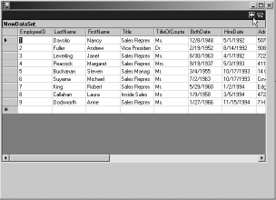
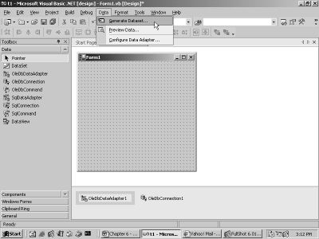
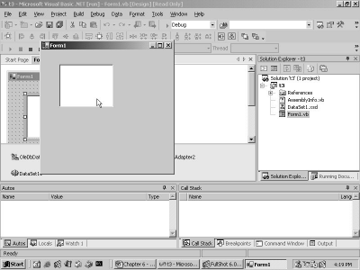

5. Database Applications
This chapter focuses on building
applications that interact with data stored in databases. However, prior to
plunging right in, we need to understand the new concepts of Properties and
Indexers, which we would be bumping into with a surprisingly high frequency, in
this application.
a.vb
public class zzz
shared sub Main()
dim a as yyy
a = new yyy
System.Console.WriteLine(a.abc)
end sub
end class
public class yyy
function abc as integer
System.Console.WriteLine("Before abc")
abc = 200
return 120
System.Console.WriteLine("After abc")
end function
end class
Output
Before abc
120
In the above example, we revisit
the concept of a function, which is a sub with a return value. A function can
return values by assigning a value to the function name. There is nothing
incongruous about this procedure of sending back values. However, there is an
alternate approach that is pursued by most of the programming languages, i.e.
the use of the 'return' statement.
In the above program, the
function name is set to a value of 200, which becomes the return value.
However, on the next line, we come across a return statement containing a value
of 120. On encountering the 'return' keyword, all execution of code in the
function ceases, and the value of 120 is returned. Thus, the WriteLine function
in main, displays the value of 120.
Note that the last WriteLine
function in abc, does not get executed. A return statement is used to return
values. The code that is positioned after the 'return' statement, never gets
executed.
a.vb
public class zzz
shared sub Main()
dim a as yyy
a = new yyy
System.Console.WriteLine(a.aa)
a.aa = 100
System.Console.WriteLine(a.aa)
end sub
end class
public class yyy
Public Property aa() As Integer
Get
System.Console.WriteLine("get")
Return 10
End Get
Set (i As Integer)
System.Console.WriteLine("set {0}",i)
End Set
End Property
end class
Output
get
10
set 100
get
10
Although the instance variables
are very handy, they have two major flaws:
• Firstly, there is no way of executing any code of our own, when the variable is being accessed. Owing to this limitation, we are never notified about the changes that the variable undergoes. Thus, no action can be taken when the value changes.
• Secondly, there is no means of performing any error checks on the value. Thus, if the value goes beyond a certain range, no corrective action can be initiated.
The solution to both these
foibles can be seen in the above example, where a yyy object is created;
thereafter, the value of the aa member is displayed. Superficially, the syntax
that is used, appears to be analogous to the one used with instance variables.
However, the code reveals that
aa is a property that returns an integer. Its syntax has two accessors, a Get
and a Set accessor. The code between the Get and End Get gets called whenever
the value of the property has to be retrieved; and the code within Set and End
Set gets executed when a value is assigned to the variable.
Each of these accessors could
contain a million lines of code. Furthermore, the Get accessor uses the
'return' statement, where the value to be returned is the current value in the
property. This explains why the value of 10 is displayed by the WriteLine
function.
On the face of it, a property
behaves just like an instance variable. It is initialized in a fashion similar
to that of a normal variable, except for the fact that the Set accessor code
gets executed when the value is assigned. Thus, the variable i will now hold a
value of 100. We have not executed any other task here. Therefore, the final
value displayed is 100 and not 10. However, in real life, this value must be
stored for further processing. The next program fixes this minor fault.
a.vb
public class zzz
shared sub Main()
dim a as yyy
a = new yyy
System.Console.WriteLine(a.aa)
a.aa = 100
System.Console.WriteLine(a.aa)
end sub
end class
public class yyy
dim ii as integer = 200
Public Property aa() As Integer
Get
System.Console.WriteLine("get")
Return ii
End Get
Set (i As Integer)
System.Console.WriteLine("set {0}",i)
ii = i
End Set
End Property
end class
Output
get
200
set 100
get
100
In this program, 'a' is an
object of class yyy. After creating the object, the value contained in the aa
variable is first displayed. Then, the aa member in the object is initialized
to 100. Finally, the value of aa is displayed. At this stage, it is well nigh
impossible to distinguish whether aa is an instance variable or a property.
However, the class yyy clears
away the mist of perplexity. When the yyy object is created, an instance
variable ii is set to the value of 200. Now, to display the value of the
property aa, the Get accessor is called, which returns the value of ii, i.e.
200. Thus, even when the property is not initialized, its value is displayed as
200.
When aa is assigned a value of
100, the Set accessor of aa is called.
The value of 100 is passed as a parameter to Set. This is verified by
displaying the value of the parameter i. Subsequent to this, the instance
variable ii is assigned this value. In
the next round, when the value of the property aa has to be retrieved, the
value of ii in the Get accessor shall be 100. Thus, the Get accessor returns
the updated value of the variable ii, which is set in the Set accessor code.
In order to store the value
assigned to the property, the presence of an instance variable in this class is
imperative. In the same vein, any amount of code can be supplied in the
accessors. This code will be executed when the value of the property is either
set or is retrieved.
a.vb
public class zzz
shared sub Main()
dim a as yyy
a = new yyy
System.Console.WriteLine(a.aa)
a.aa = 100
System.Console.WriteLine(a.aa)
end sub
end class
public class yyy
dim ii as integer = 200
Public Property aa() As Integer
Get
System.Console.WriteLine("get")
Return ii
End Get
Set (i As Integer)
System.Console.WriteLine("set {0}",i)
if i <= 50 then
ii = i
else
ii = 50
end if
End Set
End Property
end class
Output
get
200
set 100
get
50
In the above example, we perform
a check on the value assigned to the property. In the Set accessor, if the
value of the property aa is ever set to 50 or more, the value of the instance
variable is confined to 50. This occurs only when the Set accessor is called,
i.e. at the time of assignment. The Get would firstly display the initial value
of variable ii, which is set to 200.
Now, when a value of 100 is
assigned to the property, the 'if' statement in the Set returns False, thereby
executing code in the 'else' clause. As a result, the value of ii is set to 50.
Thus, the error check in the Set accessor introduces some sanity, wherein the
user is allowed to change a particular value.
The best example of this is the
GraphType. Altering its value would lead to the execution of a considerable
amount of code, which eventually redraws the graph with the new type that is
specified. At this point, the values need to be validated, since they cannot go
beyond their bounds.
Thus, the beauty of properties
is that, they provide us with instant feedback.
a.vb
public class zzz
shared sub Main()
dim a as yyy
a = new yyy
System.Console.WriteLine(a.aa)
end sub
end class
public class yyy
dim ii as integer = 200
Public Property aa() As Integer
Get
System.Console.WriteLine("get")
Return ii
End Get
End Property
end class
Error
c:\il\a.vb(10) : error BC30124: Property without a 'ReadOnly' or 'WriteOnly' specifier must provide both a 'Get' and a 'Set'.
Due to the absence of the Set
accessor in the example just discussed, the above error is generated. We have
not expounded this error message on purpose, since it is self-explanatory.
a.vb
public class zzz
shared sub Main()
dim a as yyy
a = new yyy
System.Console.WriteLine(a.aa)
end sub
end class
public class yyy
dim ii as integer = 200
Public ReadOnly Property aa() As Integer
Get
System.Console.WriteLine("get")
Return ii
End Get
End Property
end class
Output
get
200
There could be many situations
wherein we would want to display a property to the user, but would not want the
user to change its values. An answer to this would be to define the property as
ReadOnly.
In this case, the above property
shall always have a value of 200. Therefore, we can get rid of the instance
variable ii. All the other advantages of properties remain untouched.
a.vb
public class zzz
shared sub Main()
dim a as yyy
a = new yyy
a.aa = 100
' System.Console.WriteLine(a.aa)
end sub
end class
public class yyy
Public WriteOnly Property aa() As Integer
Set ( i as integer )
System.Console.WriteLine("set {0}" , i)
End Set
End Property
end class
Output
Set 100
Similar to the ReadOnly property
is the WriteOnly property. In WriteOnly property, the only option available to the user is, to change the value of
the property.
The above program reveals the
fact that, we are permitted to set the value of the property to 100. There are
a very few such situations, wherein you may like to use a WriteOnly property.
Now, remove the comment from the
above program. On doing so, the screen fills up with errors akin to the one
displayed below:
'Public Shared Overloads Sub WriteLine(format As String, ParamArray arg() As Object)': Property 'aa' is 'WriteOnly'.
This ensues because of the
property aa being WriteOnly. Thus, under no circumstances are we allowed to
display its value.
a.vb
public class zzz
shared sub Main()
dim a as yyy
a = new yyy
a.aa("Hi") = 100
System.Console.WriteLine(a.aa("Bye"))
end sub
end class
public class yyy
Public Property aa(i As string) As Integer
Get
System.Console.WriteLine("Get {0} " , i )
Return 25
End Get
Set (ByVal v As Integer)
System.Console.WriteLine("Set {0} {1}" , i , v)
End Set
End Property
end class
Output
Set Hi 100
Get Bye
25
Another advantage of using
properties is that, they can accept parameters. The above example has the
property 'aa', which is called with a string parameter.
The property definition is now
amended to accept parameters, in a manner similar to a function. Thus, while
setting the value for the property aa, the parameter value of "Hi" is
assigned to it. The value in the parameter is accepted in the string variable
i, which is displayed using the WriteLine function. In a similar manner, the
Get accessor is called with the value of "Bye".
This method is exploited very
often, whenever the class represents a record from a table. The parameter is a
string that denotes the field name whose value we may wish to retrieve or set.
a.vb
public class zzz
shared sub Main()
dim a as yyy
a = new yyy
a(10) = 100
a.Item(20) = 200
System.Console.WriteLine(a(30))
end sub
end class
public class yyy
Default Public Property Item(i As Integer) As Integer
Get
System.Console.WriteLine("Get {0} " , i )
Return 25
End Get
Set (ByVal v As Integer)
System.Console.WriteLine("Set {0} {1}" , i , v)
End Set
End Property
end class
Output
Set 10 100
Set 20 200
Get 30
25
The above program has a property
called Item, which accepts one parameter of type integer. Moreover, it has a
new keyword called 'default' added to it. When a property is marked as
'default', it requires a parameter; but more importantly, it signifies that
this property name can be omitted.
The property gets called when
the yyy instance 'a' is used with the parameter, however, without a property
name. When we come across the line a(10) = 100, Visual Basic.Net hunts for a property
that has the 'default' keyword attached to it. Since the Item property has this
tag added to it, the Set accessor of this property gets called. In the same
way, the Get accessor gets called when the WriteLine function is executed.
However, nothing prevents us
from using the property name as in a.Item(20). This is permissible, even though
the property name is 'defaulted'. The concept of 'default' is also known as an
Indexer in languages, such as C#. It is one of the various novel features of
the modern programming language theory.
If there are two properties with
the same modifier of 'Default', the following error is reported :
c:\il\a.vb(20) : error BC30359: 'Default' can be applied to only one property name in a class.
This appears logical, since only
a single property can be the default value. If there happen to be two default
values, it results in a dilemma as to which property is to be used. It is also mandatory to assign a parameter
to the property. If this is not done, the following error will be reported :
Default Public Property Item() As Integer
c:\il\a.vb(11) : error BC31048: Properties with no required parameters cannot be declared 'Default'.
After having elucidated these
concepts on properties and indexers, we progress on to the next program, which
displays data in a grid. This data is retrieved from a database, and stored in
a database.
a.vb
imports System
imports System.Data
imports System.Drawing
imports System.Windows.Forms
imports System.Data.SqlClient
imports System.Xml
public class zzz
Inherits Form
Dim d as DataGrid
dim c as DataSet
DIM con as SqlConnection
dim cust as SqlDataAdapter
sub new()
d = new DataGrid()
d.Size = new Size(584, 336)
ClientSize = new Size(600, 413)
con = new SqlConnection("uid=sa;database=northwind")
cust = new SqlDataAdapter ("Select * from Customers", con)
c = new DataSet()
d.DataSource = c
Cust.Fill(c, "ccc")
d.DataMember = "ccc"
Controls.Add(d)
end sub
shared sub Main()
dim a as zzz
a = new zzz
Application.Run(a)
end sub
end class
When we run the above program,
we see a window with a data grid, displaying data in the rows and columns
format.
Let us unravel the mystery
behind how the above program works its magic.
The program begins with six
import statements, since it employs the classes that belong to them. It is
extremely cumbersome to recall the namespace that the class belongs to.
Therefore, the help on the classes can be consulted, which not only provides
the name of the namespace, but also enlightens us about the name of the
assembly or dll file in which the code resides. There are far too many classes
that Visual Basic.Net employs. So, it is futile to even attempt committing any
of them to memory.
We have adopted the following
approach: We incorporate a class in the program. If the compiler reports an
error, we look up the help on the class, which not only divulges the name of
the namespace, but also makes known the assembly encompassing its code. The
namespace is added to the code using the import statement, and the assembly is
provided to the compiler with the /r: option.
After determining all the
namespaces and the dll files that are required, the final compiler command
looks like the followings:
vbc a.vb /r:System.Windows.Forms.dll /r:System.dll
/r:System.Drawing.dll /r:system.data.dll /r:System.XML.dll
|
Screen 5.1 |
Four objects named d, c, con and
cust are declared. Each of them is assigned a special role to play. We shall
systematically explain their significance.
The class zzz inherits from the
Form object, thereby including all the members of the Form class. In the Sub
main, 'a' is created as an object of type zzz, which is then provided as a
parameter to the Run function in the Application class. While creating the
object, the constructor or the 'new' function of zzz, gets called. In this sub,
a DataGrid object is instantiated. The DataGrid class contains code that
performs certain tasks, such as, displaying data in rows and columns format.
The Size property is set to
display the data grid within a specified area. Most properties have a default
size. However, in the case of the DataGrid, the default size is too diminutive
for our liking. The ClientSize property determines the size for the entire
window, which is also set to a new value, since the default size is too small.
The SqlConnection object is the
next in line to be created. It is this object that connects to an SQL Server
database. While connecting to the SQL Server, this class requires certain data,
such as the userid, the password, the database, etc. This is because a database
is susceptible to access by trillions of people. Thus, to maintain integrity of
data, only authorized users should be allowed access to it. For the neophytes
of the database world, Oracle and SQL Server are the two largest database
products in the world. A database server is a program that can store stupendous
quantities of data.
The string passed to the
SqlConnection constructor is called a 'connection string', which uses the
semicolon symbol as a separator or delimiter. The word uid is an option given
with the connection and it represents the user name.
Every database or operating
system, or any multi-user entity, has a specific user, for whom no rules are
applicable. In Oracle, this user is known as 'System', while in SQL Server, it
is known as 'sa'. Thus, the user 'sa' is logging into the database. It does not
possess any password, because while installing the server, we selected the
blank password option.
We are aware that this is indeed
a very dumb act to perform and it is unlikely to transpire in real life.
However, while writing this book, we wanted to avoid all complications, and
hence, we left it blank.
The data that is stored in the
tables, requires to be logically grouped, similar to the manner in which
classes are grouped within namespaces. This concept is termed as 'databases',
implying that the data would be stored in tables within a particular database
in SQLServer. The string has the database connection option, which is set to
the database named Northwind, from which, tables would be extracted for use.
The lone object that we have
achieved so far is that, we have framed the connection string in the
SqlConnection class, and have stored the result in the SqlConnection object
'con'. We have not made any attempt to connect to the database as yet.
To execute this activity, an
instance of SqlDataAdapter is created and stored in the variable called 'cust'.
The constructor is assigned two parameters; the first parameter is a string and
the second one is the freshly created SqlConnection object called 'con'.
The string in the first
parameter informs the SqlDataAdapter class about the data that needs to be
retrieved from the database. Hence, it has to be specially constructed in
accordance with the rules of SQL, i.e. Structured Query Language. Tons of pages
have been written about SQL. However, it shall be our endeavour to explain SQL
in less than 50 words.
The word Select is used in SQL
languages to retrieve data from a database. Following this, the field or column
names that are to be retrieved, are specified. The * sign represents all the
columns in the table. The word 'from' is part of the syntax. It has to be
followed by the name of the table of the database. Here, the table Customers is
specified. These databases have already been created and filled with data
during the installation of the server.
Thereafter, the SqlDataAdapter
object collects the following:
• The SQL statement, which is used for retrieving data.
• The connection object, which is used for connecting to SQL server.
Once the connection string is
prepared and the data retrieval syntax is ready in all respects, a DataSet
object is created, which represents the data collected from various tables. A
table represents a single set of logical data, while a data set represents
scores of such tables.
The data grid has a DataSource
property that is set to the DataSet c, since it is the dataset that would
finally contain the data to be displayed in the grid. The Fill function in the
SqlDataAdapter object 'cust', actually fills the DataSet object with data. In
our case, an arbitrary name of ccc is assigned to the table.
The Fill function finally
commences all the activities. Using con, a connection is established with the
SQL Server. Then, the Select statement is executed to retrieve data from the
database. The data that is returned, is a list of customers retrieved from the
Customers table. This data is stored in the dataset, under the name of 'ccc'.
A DataSet is merely a collection
of tables. Now, to display data from this set, the DataMember property is
initialized to the dataset object ccc. Finally, only the data-grid control is
added to the Form, using the Controls collection.
In this manner, a DataGrid
control can be employed to display the data from a database.
a.vb
imports System
imports System.Data
imports System.Drawing
imports System.Windows.Forms
imports System.Data.SqlClient
imports System.Xml
public class zzz
Inherits Form
Dim d as DataGrid
dim c as DataSet
DIM con as SqlConnection
dim cust as SqlDataAdapter
dim d1,d2 as SqlDataAdapter
sub new()
d = new DataGrid()
d.Size = new Size(584, 336)
ClientSize = new Size(600, 413)
con = new SqlConnection("uid=sa;database=northwind")
cust = new SqlDataAdapter ("Select * from Customers", con)
d1 = new SqlDataAdapter ("Select * from Products", con)
d2 = new SqlDataAdapter ("Select * from Employees", con)
c = new DataSet()
d.DataSource = c
Cust.Fill(c, "ccc")
d1.Fill(c, "ddd")
d2.Fill(c, "eee")
Controls.Add(d)
end sub
shared sub Main()
dim a as zzz
a = new zzz
Application.Run(a)
end sub
end class
In the above example, two additional
SqlDataAdapter objects, d1 and d2 are created. The constructors are given the
same SqlConnection object, but with different table names of Products and
Employees in the SQL statement.
Then, the Fill function is used
to create two more tables called ddd and ccc, in the DataSet object c. Thus, the DataSet object now has three
tables within it.
Here, the line initializing the
DataMember property, has also been deleted. On running the above program, a
window will be displayed, as shown in screen 5.2.
|
Screen 5.2 |
The only thing that is apparent
in the window is a 'plus' sign, since the Data Member is not initialized.
This sign is an indication to
the DataGrid, that the + sign has to be clicked upon, in order to display the
list of tables contained in the DataSet.
|
Screen 5.3 |
Clicking on the 'plus' sign
expands the DataSet to display the three tables. This is shown in screen 5.3.
We have clicked on the last table named eee. Therefore, the screen that pops
up, displays the records from the Products table, as shown in screen 5.4.
|
 |
|
Screen 5.4 |
If you observe the screen very
closely, you would notice an arrow marked to the left. If you click on the
arrow, you would once again land up in screen 5.3. This is how a DataGrid
facilitates switching between tables, when the DataSet comprises of more than
one table.
a.vb
imports System
imports System.Data
imports System.Drawing
imports System.Windows.Forms
imports System.Data.SqlClient
imports System.Xml
public class zzz
Inherits Form
Dim WithEvents d as DataGrid
dim c as DataSet
DIM con as SqlConnection
dim cust as SqlDataAdapter
sub new()
d = new DataGrid()
d.AlternatingBackColor = Color.Red
d.BackColor = Color.Blue
d.BackgroundColor = Color.Green
d.CaptionForeColor = Color.Black
d.CaptionBackColor = Color.White
d.CaptionText = "Vijay Mukhi"
d.CaptionVisible = true
d.Size = new Size(584, 336)
ClientSize = new Size(600, 413)
con = new SqlConnection("uid=sa;database=northwind")
cust = new SqlDataAdapter ("Select * from Customers", con)
c = new DataSet()
d.DataSource = c
Cust.Fill(c, "ccc")
d.DataMember = "ccc"
Controls.Add(d)
end sub
shared sub Main()
dim a as zzz
a = new zzz
Application.Run(a)
end sub
sub abc(s as object , e as MouseEventArgs ) Handles d.MouseDown
System.Console.WriteLine("{0} {1} {2} {3}" ,e.X , e.Y , e.Clicks , e.Button)
end sub
end class
Output
177 50 1 Left
208 112 2 Right
The above DataGrid example
consists of a variety of colors. First of all, the Background color is set to
green, by initializing the BackgroundColor property to Green. This property is
a shared instance member of the class Color. Next, the default BackColor of the
row is set to Blue, and the AlternatingBackColor is set to Red. Every alternate row will have the background
color of red. This completes the coloring of the grids.
The property CaptionText
determines the title of the data grid. Here, it is set to "Vijay
Mukhi". The caption is made visible, and the foreground and background
colors are initialized to Black and White, respectively. This is achieved by setting the CaptionForeColor
and CaptionBackColor properties in the datagrid.
The most striking feature of
this example is not the setting of the myriad colors, but the 'event handling'
of the grid. Since we want the DataGrid object 'd' to handle events, the
WithEvents keyword is specifed with the handler assigned to sub abc, with the
object event of d.MouseDown.
This initialization traps every
mouseclick on the grid and calls the function abc. The sub abc is called with two parameters, where the second
parameter 'e' is of type MouseEventArgs. This object has two properties named X
and Y, which store the position of the mouse click. The Clicks property
maintains the count of the total number of clicks. Finally, the button property
apprizes us of whether it was the Right mouse button that was clicked, or was
it the Left mouse button to be clicked.
The output discloses that it was
the Right mouse button that was clicked twice, at x and y of 208 and 112. By
implementing this feature, we can assist in monitoring the actions of the user
on the data grid.
a.vb
imports System
imports System.Data
imports System.Drawing
imports System.Windows.Forms
imports System.Data.SqlClient
imports System.Xml
public class zzz
Inherits Form
Dim WithEvents d as DataGrid
dim c as DataSet
DIM con as SqlConnection
dim cust as SqlDataAdapter
sub new()
d = new DataGrid()
d.Size = new Size(584, 336)
ClientSize = new Size(600, 413)
con = new SqlConnection("uid=sa;database=northwind")
cust = new SqlDataAdapter ("Select * from Customers", con)
c = new DataSet()
d.DataSource = c
Cust.Fill(c, "ccc")
d.DataMember = "ccc"
Controls.Add(d)
end sub
shared sub Main()
dim a as zzz
a = new zzz
Application.Run(a)
end sub
sub abc(s as object , e as EventArgs ) handles d.CurrentCellChanged
Dim g as DataGridCell
g = d.CurrentCell
dim c,r as integer
c = g.ColumnNumber
r = g.RowNumber
System.Console.WriteLine( "Column {0} Row {1} Value {2}" , c , r , d(r,c))
d(r,c) = "hi " & d(r,c)
end sub
end class
Output
Column 3 Row 2 Value Owner
Column 2 Row 4 Value Christina Berglund
A DataGrid object is comprised
of multiple objects of type DataGridCell. These objects are the cells which are
at the intersection of a row and a column storing data. Whenever we click on a
cell to change its value, the event CurrentCellChanged gets called. In our
program, we have trapped this event to call the function abc.
The CurrentCell property returns
a DataGridCell object, which represents the cell that the user has currently
clicked on. This value is stored in the variable 'g'. Thus, each time a cell is
clicked on, the value of the CurrentCell property is updated, to reflect this
new cell or DataGridCell object.
The DataGridCell object has two
properties, named ColumnNumber and RowNumber, which return integer values
representing the column and the row that have been selected. These values are
printed with the help of the WriteLine function, along with the indexer that
accepts a row and column number. The indexer returns the contents of the Cell.
To change the current contents of the cell, the indexer can be reused, with the
new value that is to be assigned.
In Visual Basic.Net, the &
sign is utilized to concatenate or join two strings. The indexer for the
DataGrid class is 'read-write'. Hence, it can be used to get a value, as well
as, to set a value.
a.vb
imports System
imports System.Data
imports System.Drawing
imports System.Windows.Forms
imports System.Data.SqlClient
imports System.Xml
public class zzz
Inherits Form
Dim d as DataGrid
dim t as DataTable
Dim r as DataRow
sub new()
d = new DataGrid()
d.Size = new Size(584, 336)
ClientSize = new Size(600, 413)
t = new DataTable()
Dim c as DataColumnCollection
c = t.Columns
c.Add("Name")
c.Add("City")
r = t.NewRow()
r("Name") = "Vijay"
r("City") = "Bombay"
Dim r1 as DataRowCollection
r1 = t.Rows
r1.Add(r)
r = t.NewRow()
r("Name") = "Sonal"
r("City") = "Delhi"
t.Rows.Add(r)
d.DataSource = t
Controls.Add(d)
end sub
shared sub Main()
dim a as zzz
a = new zzz
Application.Run(a)
end sub
end class
|
Screen 5.5 |
The above example demonstrates
the fact, that the data displayed in a data grid may not necessarily originate
from a table in a database. It could originate from anywhere. The screen 5.5
authenticates this fact.
To implement the above, a
DataTable object t is created. The
constructor may be passed the name of the table Control, however, this
is optional.
A table is made up of a large
number of columns or DataColumn objects, which are represented by a
DataColumnCollection object. The DataTable has a member called Columns, which
returns a DataColumnCollection. Using the Add function in the DataColumnCollection
class, two columns named Name and City are added to the data table.
Thus, while dealing with a data
table object, the basic principle to be kept in mind is that the properties of
the DataTable are to be used, and not the DataTable object itself.
Applying the same principle,
records are added to the data table. The NewRow function adds a new empty row
to the DataTable object. Then, using the indexer and assigning it a parameter
of the column name, the columns are individually assigned to some values.
After having initialized the
DataRow object, the row now has to be added to the DataTable. The DataRows are
stored in a DataRowCollection object, which can be accessed using the Rows
collection. So, like before, we use the 'Add' function to add the row to the
DataTable. In all, two rows are added to the DataTable. Thus, a DataTable is
merely a collection of records, and it represents records in the same manner in
which they are stored in the database.
While retrieving data from the
table, the DataSource property was initialized to a data set. However, when
values are assigned individually, a DataTable object is used. Thus, the data
grid object is flexible enough to work with different data sources.
a.vb
imports System
imports System.Data
imports System.Drawing
imports System.Windows.Forms
imports System.Data.SqlClient
imports System.Xml
public class zzz
Inherits Form
Dim d as DataGrid
dim c as ccc
DIM con as SqlConnection
dim cust , ord as SqlDataAdapter
sub new()
d = new DataGrid()
d.Size = new Size(584, 336)
ClientSize = new Size(600, 413)
con = new SqlConnection("uid=sa;database=northwind")
cust = new SqlDataAdapter ("Select * from Customers", con)
Ord = new SqlDataAdapter ("Select * from Orders", con)
c = new ccc
d.DataSource = c
d.DataMember = "Customers"
Cust.Fill(c, "Customers")
Ord.Fill(c, "Orders")
Controls.Add(d)
end sub
shared sub Main()
dim a as zzz
a = new zzz
Application.Run(a)
end sub
end class
public class ccc
Inherits DataSet
dim tc as cus
dim to1 as orders
dim r as DataRelation
public sub new
tc= new cus("Customers")
Tables.Add(tc)
to1= new Orders("Orders")
Tables.Add(to1)
r = new DataRelation("custord",tc.cID,to1.oID)
Relations.Add(r)
end sub
end class
public class cus
Inherits DataTable
public dim cID as DataColumn
sub new (n as string)
Mybase.New(n)
cID = new DataColumn("CustomerID")
Columns.Add(cID)
end sub
end class
public class Orders
Inherits DataTable
public oID as DataColumn
sub new (n as string)
mybase.new(n)
oID = new DataColumn("CustomerID")
Columns.Add(oID)
end sub
end class
The explanation to the above
program could run into reams of paper. Therefore, we shall examine it only
after executing the program.
But prior to that, we would like
to furnish one crucial bit of information to you, i.e. the Customer table
contains a list of customers, while the Orders table contains the list of
orders that the customer places on a regular basis.
The output displays a list of
customers, with a plus sign placed next to it. This is displayed in screen 5.6.
|
Screen 5.6 |
If we click on the plus sign,
custord will be displayed with a link, as shown in the screen 5.7.
|
Screen 5.7 |
When we click on this link, a
list of orders placed by the customer will be displayed. Screen 5.8
substantiates this point.
|
Screen 5.8 |
The above procedure can be
repeated for any customer, whose orders need to be viewed. This example demonstrates
how data from different data tables, can now be related to each other.
Most of the code remains
unchanged, with the exception of a few additions. An additional SqlDataAdapter
object named ord is created, to represent records from the Orders table. The
major difference is that the class ccc, which is derived from the DataSet
class, is employed in lieu of using the DataSet class directly.
A significant advantage of this
approach is that, the code that is deemed appropriate from the DataSet class,
can be utilized; whereas, the code that is not considered acceptable, can be
overridden.
Thus, at the very outset, we
have created a ccc object. This leads to a call to the constructor of the ccc
class. In the ccc object, three instance objects have been created.
The first one is of type class
cus, which is derived from the DataTable class. The cus constructor is passed
the name of the table, i.e. Customers, which would be considered a little
later, along with the Fill function. Both the names should necessarily be the
same, or else, an exception would be thrown.
Since the cus class is derived
from the DataTable class, it represents some data. By overriding the DataTable
class, an additional column can be added to the DataTable. This is accomplished
by creating a DataColumn called CustomerID, and then, by using the add function
to add the column to the Columns collection. Candidly speaking, the sole
purpose of deriving the cus class from the DataTable class is to add a column
named CustomerID.
The column CustomerID is visible
in both the tables, i.e. Customers and Orders. Hence, it can be used to relate
records in these two tables. In the ccc class, the class cus is added to the
list of DataTables, maintained by the Tables collection of the DataSet class.
Next, we create an object that
is an instance of the Orders class. The mechanism of this object remains
analogous to the cus class, where a new column named CustomerID is introduced. The
DataColumn object in both the DataTable classes is an instance variable, and
hence, it is accessible to the other objects.
Now, we descend upon the most
crucial lines of the code.
An object of class DataRelation
is created, where the first parameter to the constructor is a string, denoting
the name of the DataRelation. The string assigned here is custord. As an
outcome of this, the hyperlink of custord is revealed when the plus sign is
clicked upon.
The next parameter is the
DataColumn for the Primary key, which is the column that is unique. The value
assigned in the Customers table is CustomerID, since it is unique for every
customer. The last parameter is the Foreign Key in the second table, which
contains multiple values of the Primary Key. The CustomerID column in the
Orders table has more than one occurrence of the Customer id.
Using the Add function, the
relation is then added to the Relations object. This is indicative of the fact,
that there may be many more relations that can be added, once the relation
between the data has been established. The rest of the code remains unaltered.
Both, the primary key and the foreign key need to be represented by DataColumn
objects. Therefore, the two classes of cus and orders have been created.
Having acquired the knowledge of
the concepts, by manually creating an application, let us now allow Visual
Studio.Net to create it for us. The application will consist of a Form having a
button and a DataGrid. Once the user clicks on the button, the DataGrid will be
suffused with data from the Database.
What is of prime significance
here is that, all this transpires without our having to write reams of code,
since it is the framework that handles this task. However, after discerning as
to how the application works, we shall venture forth to unravel the code
written by Visual Studio.Net.
We would implore you not to
meddle with the application, till we have accomplished our task. We have
endeavoured to subsume most of the screens for your convenience, thus eliminating
the need to sit in front of the computer while browsing the chapter.
In Visual Studio.Net, you can
create a new project by clicking on the menu, File - New - Project. This opens
up the New Project dialog box. In the first pane, choose Visual Basic Projects,
and in the second pane, choose Windows Applications. Enter t1 as the name of
the project, and point the directory to c:\v1. Then, click on OK. You may wish
to select the project name; however, we would request you to initially accept
our names as they are.
You should arrive at screen 5.9,
having a mammoth Form and a ToolBox to the left. If for some reason, you are
unable to see the toolbox on the left, click on the menu View, and select
ToolBox. But, if you have toolbox that hides automatically, unselect the option
of AutoHide from the Windows menu option.
|
|
|
Screen 5.9 |

The toolbox has millions of controls.
Hence, they are located under separate categories or tabs. The category of Data
encompasses all the controls that work with data. Since this chapter deals with
databases, select the Data subhead, and examine the controls stipulated below
it. The screen that we arrive at, is shown in screen 5.10.
|
Screen 5.10 |
Choose the control called OleDbDataAdapter
and place it on the Form. It should be done in a manner akin to the one
employed in the previous chapter, to place a button on the Form.
The procedure remains the same,
i.e. click on the control to select it, and then, keeping the left mouse button
pressed, drag and drop it onto the Form. Surprisingly, unlike a button, the
control is not positioned on the Form. Instead, a dialog box pops up, as shown
in screen 5.11.
|
Screen 5.11 |
Here, we are informed in no
uncertain terms, that we are in the august presence of Merlin's Wizard! The job
of a wizard is to make our lives easier by using black magic. Thus, a Microsoft
wizard throws a volley of questions at us. Based on the answers furnished by
us, it toils towards ameliorating our lives by writing tons of code to achieve
the desired outcome.
By convention, the first screen
of a wizard provides information about the type of the wizard. Presently, we
are not very keen on reading it. So, we click on the Next button. This
transports us to the next step in the wizard, as shown in screen 5.12.
|
Screen 5.12 |
Here, we are asked to confirm
which database we prefer to connect to. Since we have not created any
connection in the past, we click on the 'New connection' button to arrive at
screen 4.13.
|
Screen 5.13 |
The Data Link Properties Dialog
Box requires considerable amount of information, before it can create a new connection.
However, all the boxes do not require to be filled up. The server name is left
blank, since the database server runs on the same machine as the application.
A connection is made to the
server, employing the user name 'sa'. Therefore, 'sa' is entered in the textbox
labeled 'User Name'. Since the password is set to blank, the Check box for
Blank password is selected. Then, we click on the down arrow of the drop down
listbox for displaying the option of select database on server. The screen 5.14
depicts the outcome of our action.
|
Screen 5.14 |
The list provided is that of the
databases, which have been created on the server. After having selected the
Northwind database, the dialog box looks similar to what is shown in screen
5.15.
|
Screen 5.15 |
The program that we had written earlier had incorporated data from the 'Northwind' database, which is visible in the list. Although we are at liberty to select the database, we will stick to Northwind for the time being.
An added advantage of a drop
down listbox is that, it averts the possibility of a wrong database name being
entered by the user, since a name has to be selected from the list that is
provided.
Now, click on the button labeled
Test Connection. This finally ascertains whether all the values entered are
valid from the standpoint of the database server.
The Screen 5.16 returns with a
message of success.
|
Screen 5.16 |
Some processing had taken place
when the Test connection button was clicked.
This involved connecting to SQL
Server using the user name 'sa' and using a blank password, and thereafter, accessing
the Northwind database.
When you click on OK, you will
be reverted back to one of the previous screens, with the name of
VMUKHI.Northwind.dbo in the listbox, as shown in screen 5.17.
|
Screen 5.17 |
Vmukhi is the name assigned to
our computer. It is followed by the name of the database Northwind, with an
extension of dbo.
Now, click on the Next button to
arrive at the screen 5.18. A 'stored procedure' is a program that resides and
executes on the server. We feel quite contented to use the trusted SQL Select
statements to fetch data. So, we simply click on the Next button, without
making any amendments to screen 5.18.
|
Screen 5.18 |
In screen 5.19, we see a cursor blinking
in the text area, which is an indication that an SQL Select statement has to be
entered.
|
Screen 5.19 |
In case you are not conversant
with the options, you can click on Query Builder, as we have done, to arrive at
screen 5.20.
|
Screen 5.20 |
The listbox displays the tables
that constitute the Northwind database. Click on Customers, and then on the Add
button. The background area in screen 5.21 changes, to display a box containing
the word 'customers', with a list of fields within it. Since there are no more
tables to select from, we click on the Close button.
|
Screen 5.21 |
In screen 5.22, the first three fields
are selected. This has been achieved by clicking on the check box, due to
which, the selected field names get added to the Select statement.
|
Screen 5.22 |
Since we are satisfied with what
we have achieved, we click on the OK button.
This takes us to screen 5.23,
which displays the Select statement that is generated. The Select statement shows
the three selected fields of CustomerID, Company Name and ContactName for which
data is to be retrieved from the Customers table.
|
Screen 5.23 |
This is where a wizard really
flaunts its mettle, since it is easier to select from a list, rather than to
write things out manually. The beauty of SQL is revealed in all its glory, when
we have to work with multiple tables.
When we click on the Next
button, the screen 5.24 reveals that the wizard has internally performed a
number of tasks for us. Finally, click on Finish to end the wizard.
|
Screen 5.24 |
As shown in screen 5.25, the
screen does not show the object on the Form; instead, it has two objects, i.e.
OleDbDataAdapter1 and OleDbConnection1, which are located at the bottom of the
screen.
|
Screen 5.25 |
This highlights the fact that
there are two types of controls.
• The first type is similar to a button, which gets displayed in the Form.
• The second type is that of OleDbConnection, which does not have an User Interface, and which gets placed at the bottom of the Form.
The next object required is a DataSet
object, which simply relates to a collection of tables. The Visual Studio.Net
interface has a menu option Data. So, click on Data and select the option of
'Generate Dataset', as shown in Screen 5.26.
|
 |
|
Screen 5.26 |
This generates a screen, as
shown in screen 5.27.
|
Screen 5.27 |
We are contented with the
default options assigned to our dataset, where the name indicated is DataSet1.
The framework is extremely astute, and hence, it adds the Customers table to
the Dataset, as shown in the screen. Finally, since the check box at the bottom
is selected, the dataset gets added to the Designer.
When the OK button is clicked,
the dataset DataSet1 will be displayed at the bottom of the non User Interface
controls. This is shown in Screen 5.28
|
Screen 5.28 |
Next, a DataGrid has to be added
to the Form. So, we click on the Windows Form Tab in the toolbox, select
DataGrid and drag it onto the Form window. This is shown in Screen 5.29 and
Screen 5.30.
|
Screen 5.29 |
|
Screen 5.30 |
The DataGrid and Form are
disconcertingly cramped. So, we click on their edges and drag them diagonally to
enlarge their sizes, as in evident in screen 5.31.
|
Screen 5.31 |
Our program had initialized various
properties such as ClientSize, Background color etc. To modify these
properties, click on the menu option of View-Properties Window.
|
Screen 5.32 |
This brings up the Properties
window on the right hand side of the screen. Since the DataGrid control is
selected, the properties related to the Grid are displayed. When you select the
Form, its properties get displayed in the Properties Window.
Click on the drop down listbox
for the DataSource property. It displays a list containing two items, as seen
in screen 5.33. Select the option of DataSet1, as shown in screen 5.34.
|
Screen 5.33 |
|
Screen 5.34 |
The DataMember property that is
positioned immediately above the DataSource, is also required to be Set. So,
click on the down arrow, and from the list, select the table named Customers.
|
|
|
Screen 5.35 |

In screen 5.36, we have selected
the Customers table. On doing so, the DataGrid automatically gets transformed
to display three fields in the table.
|
|
|
Screen 5.36 |

Now, incorporate another button control
into the Form, as is shown in screen 5.37. The Properties window exhibits the
properties for the button, since it is the selected object.
|
Screen 5.37 |
In the Properties window, enter
the word 'Load' in the Text property of the button. Then, press Enter, and you
will instantly witness the text on the button change to 'Load', as shown in
screen 5.38.
|
Screen 5.38 |
Now, double click on the button,
and enter the following line at the cursor position:
OleDbDataAdapter1.Fill(DataSet11)
|
Screen 5.39 |
In order to verify whether
everything has been entered accurately or not, click on the menu option Debug, and
then, click on Start. The screen that emerges is shown in screen 5.40.
|
Screen 5.40 |
An empty DataGrid and a button labeled
'Load' are displayed. Now, click on the button. Lo & behold! The screen
transforms, displaying the Data Grid containing the data retrieved from the
Customer table, as is evident in screen 5.41.
|
Screen 5.41 |
Let us now snoop behind the
scenes to check on the activities that have taken place. We would be explaining
each new step incorporated above, by interpreting the code that has been
generated. You will never be able to grasp the applications without learning
the language. Therefore, we insist that you learn the language before diving
straight into the depths of the applications. We have copied the generated code
and presented it below
We have converged our attention
around the code that has been introduced recently, so that our explanation is
confined to the newly added code only, in order to avoid repetition. Furthermore,
once the code has been explicated, it will not be exhibited again.
Since the process of code
generation has been automated, a lot of code has been included to handle
situations that may possibly occur only once in a million years! Thus, a lot of
redundant code is generated. We have displaced all comments, since they impede
our understanding of the code. We have also done away with all the blank lines,
since they occupy too much space.
Public Class Form1
Inherits System.Windows.Forms.Form
#Region " Windows Form Designer generated code "
Public Sub New()
MyBase.New()
InitializeComponent()
End Sub
Protected Overloads Overrides Sub Dispose(ByVal disposing As Boolean)
If disposing Then
If Not (components Is Nothing) Then
components.Dispose()
End If
End If
MyBase.Dispose(disposing)
End Sub
Friend WithEvents OleDbDataAdapter1 As System.Data.OleDb.OleDbDataAdapter
Friend WithEvents OleDbSelectCommand1 As System.Data.OleDb.OleDbCommand
Friend WithEvents OleDbInsertCommand1 As System.Data.OleDb.OleDbCommand
Friend WithEvents OleDbUpdateCommand1 As System.Data.OleDb.OleDbCommand
Friend WithEvents OleDbDeleteCommand1 As System.Data.OleDb.OleDbCommand
Friend WithEvents OleDbConnection1 As System.Data.OleDb.OleDbConnection
Private components As System.ComponentModel.IContainer
<System.Diagnostics.DebuggerStepThrough()> Private Sub InitializeComponent()
Me.OleDbDataAdapter1 = New System.Data.OleDb.OleDbDataAdapter()
Me.OleDbSelectCommand1 = New System.Data.OleDb.OleDbCommand()
Me.OleDbInsertCommand1 = New System.Data.OleDb.OleDbCommand()
Me.OleDbUpdateCommand1 = New System.Data.OleDb.OleDbCommand()
Me.OleDbDeleteCommand1 = New System.Data.OleDb.OleDbCommand()
Me.OleDbConnection1 = New System.Data.OleDb.OleDbConnection()
Me.OleDbDataAdapter1.DeleteCommand = Me.OleDbDeleteCommand1
Me.OleDbDataAdapter1.InsertCommand = Me.OleDbInsertCommand1
Me.OleDbDataAdapter1.SelectCommand = Me.OleDbSelectCommand1
Me.OleDbDataAdapter1.TableMappings.AddRange(New System.Data.Common.DataTableMapping() {New System.Data.Common.DataTableMapping("Table", "Customers", New System.Data.Common.DataColumnMapping() {New System.Data.Common.DataColumnMapping("CustomerID", "CustomerID"), New System.Data.Common.DataColumnMapping("CompanyName", "CompanyName"), New System.Data.Common.DataColumnMapping("ContactName", "ContactName")})})
Me.OleDbDataAdapter1.UpdateCommand = Me.OleDbUpdateCommand1
Me.OleDbSelectCommand1.CommandText = "SELECT CustomerID, CompanyName, ContactName FROM Customers"
Me.OleDbSelectCommand1.Connection = Me.OleDbConnection1
Me.OleDbInsertCommand1.CommandText = "INSERT INTO Customers(CustomerID, CompanyName, ContactName) VALUES (?, ?, ?); SEL" & _
"ECT CustomerID, CompanyName, ContactName FROM Customers WHERE (CustomerID = ?)"
Me.OleDbInsertCommand1.Connection = Me.OleDbConnection1
Me.OleDbInsertCommand1.Parameters.Add(New System.Data.OleDb.OleDbParameter("CustomerID", System.Data.OleDb.OleDbType.VarWChar, 5, "CustomerID"))
Me.OleDbInsertCommand1.Parameters.Add(New System.Data.OleDb.OleDbParameter("CompanyName", System.Data.OleDb.OleDbType.VarWChar, 40, "CompanyName"))
Me.OleDbInsertCommand1.Parameters.Add(New System.Data.OleDb.OleDbParameter("ContactName", System.Data.OleDb.OleDbType.VarWChar, 30, "ContactName"))
Me.OleDbInsertCommand1.Parameters.Add(New System.Data.OleDb.OleDbParameter("Select_CustomerID", System.Data.OleDb.OleDbType.VarWChar, 5, "CustomerID"))
Me.OleDbUpdateCommand1.CommandText = "UPDATE Customers SET CustomerID = ?, CompanyName = ?, ContactName = ? WHERE (Cust" & _
"omerID = ?) AND (CompanyName = ?) AND (ContactName = ? OR ? IS NULL AND ContactN" & _
"ame IS NULL); SELECT CustomerID, CompanyName, ContactName FROM Customers WHERE (" & _
"CustomerID = ?)"
Me.OleDbUpdateCommand1.Connection = Me.OleDbConnection1
Me.OleDbUpdateCommand1.Parameters.Add(New System.Data.OleDb.OleDbParameter("CustomerID", System.Data.OleDb.OleDbType.VarWChar, 5, "CustomerID"))
Me.OleDbUpdateCommand1.Parameters.Add(New System.Data.OleDb.OleDbParameter("CompanyName", System.Data.OleDb.OleDbType.VarWChar, 40, "CompanyName"))
Me.OleDbUpdateCommand1.Parameters.Add(New System.Data.OleDb.OleDbParameter("ContactName", System.Data.OleDb.OleDbType.VarWChar, 30, "ContactName"))
Me.OleDbUpdateCommand1.Parameters.Add(New System.Data.OleDb.OleDbParameter("Original_CustomerID", System.Data.OleDb.OleDbType.VarWChar, 5, System.Data.ParameterDirection.Input, False, CType(0, Byte), CType(0, Byte), "CustomerID", System.Data.DataRowVersion.Original, Nothing))
Me.OleDbUpdateCommand1.Parameters.Add(New System.Data.OleDb.OleDbParameter("Original_CompanyName", System.Data.OleDb.OleDbType.VarWChar, 40, System.Data.ParameterDirection.Input, False, CType(0, Byte), CType(0, Byte), "CompanyName", System.Data.DataRowVersion.Original, Nothing))
Me.OleDbUpdateCommand1.Parameters.Add(New System.Data.OleDb.OleDbParameter("Original_ContactName", System.Data.OleDb.OleDbType.VarWChar, 30, System.Data.ParameterDirection.Input, False, CType(0, Byte), CType(0, Byte), "ContactName", System.Data.DataRowVersion.Original, Nothing))
Me.OleDbUpdateCommand1.Parameters.Add(New System.Data.OleDb.OleDbParameter("Original_ContactName1", System.Data.OleDb.OleDbType.VarWChar, 30, System.Data.ParameterDirection.Input, False, CType(0, Byte), CType(0, Byte), "ContactName", System.Data.DataRowVersion.Original, Nothing))
Me.OleDbUpdateCommand1.Parameters.Add(New System.Data.OleDb.OleDbParameter("Select_CustomerID", System.Data.OleDb.OleDbType.VarWChar, 5, "CustomerID"))
Me.OleDbDeleteCommand1.CommandText = "DELETE FROM Customers WHERE (CustomerID = ?) AND (CompanyName = ?) AND (ContactNa" & _
"me = ? OR ? IS NULL AND ContactName IS NULL)"
Me.OleDbDeleteCommand1.Connection = Me.OleDbConnection1
Me.OleDbDeleteCommand1.Parameters.Add(New System.Data.OleDb.OleDbParameter("Original_CustomerID", System.Data.OleDb.OleDbType.VarWChar, 5, System.Data.ParameterDirection.Input, False, CType(0, Byte), CType(0, Byte), "CustomerID", System.Data.DataRowVersion.Original, Nothing))
Me.OleDbDeleteCommand1.Parameters.Add(New System.Data.OleDb.OleDbParameter("Original_CompanyName", System.Data.OleDb.OleDbType.VarWChar, 40, System.Data.ParameterDirection.Input, False, CType(0, Byte), CType(0, Byte), "CompanyName", System.Data.DataRowVersion.Original, Nothing))
Me.OleDbDeleteCommand1.Parameters.Add(New System.Data.OleDb.OleDbParameter("Original_ContactName", System.Data.OleDb.OleDbType.VarWChar, 30, System.Data.ParameterDirection.Input, False, CType(0, Byte), CType(0, Byte), "ContactName", System.Data.DataRowVersion.Original, Nothing))
Me.OleDbDeleteCommand1.Parameters.Add(New System.Data.OleDb.OleDbParameter("Original_ContactName1", System.Data.OleDb.OleDbType.VarWChar, 30, System.Data.ParameterDirection.Input, False, CType(0, Byte), CType(0, Byte), "ContactName", System.Data.DataRowVersion.Original, Nothing))
Me.OleDbConnection1.ConnectionString = "Provider=SQLOLEDB.1;Persist Security Info=False;User ID=sa;Initial Catalog=Northw" & _
"ind;Use Procedure for Prepare=1;Auto Translate=True;Packet Size=4096;Workstation" & _
" ID=VMUKHI;Use Encryption for Data=False;Tag with column collation when poss" & _
"ible=False"
Me.AutoScaleBaseSize = New System.Drawing.Size(5, 13)
Me.ClientSize = New System.Drawing.Size(292, 273)
Me.Name = "Form1"
Me.Text = "Form1"
End Sub
#End Region
End Class
In the Form, we first introduced
an OleDbDataAdapter object. This resulted in the creation of the DataAdapter
and DataConnection objects, which carried the information essential to connect
to the database server. Resultantly, the above code was generated.
Other than calling the InitializeComponent
function, the constructor has no other role to play. All the valuable code is
placed in the InitializeComponent function. The Dispose function remains
unchanged, and can be ignored completely. Normally, all the instance variables
are positioned after these housekeeping functions.
We had earlier learnt that two
objects of type SqlConnection and SqlDataAdapter were required to connect to
any database in SQL Server. Since these objects are restricted to SQL Server,
they cannot be used in the context of other database servers.
Thus, the code is not generic in
nature. Therefore, the Wizard creates objects of type OleDbConnection and
OleDbDataAdapter, since they can then be implemented on multiple database
servers, including SQL Server. Barring this difference, both the objects work
in a similar manner.
Every corresponding object has a
number appended to the name of the class. This number gets incremented when
another object of the same kind is added to the Form. This helps in assigning
unique names to each object.
The wizard generates SQL
statements for adding, updating and deleting records from the database. The
OleDbCommand object is created for this purpose, since it is conversant in
dealing with SQL.
In the InitializeComponent
function, all the instance variables are initialized using the new keyword with
the constructor that does not take any parameters.
The DeleteCommand is a property
of type OleDbCommand, which represents an SQL statement or a stored procedure
employed for deleting records. Similarly, the object also contains properties
to represent Insert, Select and Update commands.
The property of TableMappings is
of type DataTableMappingCollection. It is a collection objects that provides
the master mapping between the source table and a DataTable. The AddRange
function accepts an array of DataTableMapping objects.
Me.OleDbDataAdapter1.TableMappings.AddRange(New System.Data.Common.DataTableMapping() {New System.Data.Common.DataTableMapping("Table", "Customers", New System.Data.Common.DataColumnMapping() {New System.Data.Common.DataColumnMapping("CustomerID", "CustomerID"), New System.Data.Common.DataColumnMapping("CompanyName", "CompanyName"), New System.Data.Common.DataColumnMapping("ContactName", "ContactName")})})
The first parameter to the
constructor of a DataTable Mapping is a string that represents a table. The
second parameter is the name of the table selected in the Select statement,
i.e. Customers. Following this array, there is another array named Columns, which
is a DataColumnMapping collection.
The DataColumnMapping object
takes two strings:
• The first is the column name from the data source.
• The second is the column name from the DataSet that it must map to.
While building the query, we had
chosen three columns. Therefore, there are three members in the array. The
parameter names and the column names have been kept identical.
Me.OleDbSelectCommand1.CommandText = "SELECT CustomerID, CompanyName, ContactName FROM Customers"
Do bear in mind that most of the
above code is superfluous, and hence, dispensable. The OleDbCommand has a
property called CommandText, using which, the OleDBSelectCommand is initialized
to the SQL statement associated with the Command object. The SQL statement that
is generated with the Query Builder, is assigned to this property.
Me.OleDbSelectCommand1.Connection = Me.OleDbConnection1
Every Adapter object needs a
Connection handle. Therefore, the Connection property is set to the
OleDbConnection object.
The CommandText property in the
Insert Object is set to a SQL Insert statement. We can very easily add records
while the DataGrid is displaying its set of records.
Me.OleDbInsertCommand1.CommandText = "INSERT INTO Customers(CustomerID, CompanyName, ContactName) VALUES (?, ?, ?); SEL" & _
"ECT CustomerID, CompanyName, ContactName FROM Customers WHERE (CustomerID = ?)"
Note, that the syntax for the
Insert statement starts with the reserved words 'Insert into', followed by the
name of the table, i.e. Customers, followed by the list of field names in round
brackets. This is followed by the reserved word 'values', which is followed by
the actual values that need to be inserted, placed within round brackets. These
values are not known at this stage. Hence, they are represented by a ? symbol,
which represents a parameter or a place holder. It will be substituted by a
value in due course of time.
The SELECT statement with the
Insert command identifies a unique customer record. Since the line is broken on
two lines, the word ‘SELECT’ has the continuation character of &_ in double
quotes.
One line below the insert
command is the Parameters Collection object, which keeps track of all the
parameters.
Me.OleDbInsertCommand1.Parameters.Add(New System.Data.OleDb.OleDbParameter("CustomerID", System.Data.OleDb.OleDbType.VarWChar, 5, "CustomerID"))
To this collection, we add an
instance of an OleDbParameter object, whose constructor takes the following
parameters: First is a parameter name, followed by the data type, followed by
the width of the column, and finally, followed by the name of the source
column. The parameters have been assigned the same names as those of the
fields.
Me.OleDbInsertCommand1.Parameters.Add(New System.Data.OleDb.OleDbParameter("Select_CustomerID", System.Data.OleDb.OleDbType.VarWChar, 5, "CustomerID"))
The parameter that identifies
the CustomerID in the where clause is given the name of Select_CustonerID as
shown above.
Me.OleDbUpdateCommand1.CommandText = "UPDATE Customers SET CustomerID = ?, CompanyName = ?, ContactName = ? WHERE (C" & _
"ustomerID = ?) AND (CompanyName = ?) AND (ContactName = ? OR ? IS NULL AND ContactN" & _
"ame IS NULL); SELECT CustomerID, CompanyName, ContactName FROM Customers WHERE (" & _
"CustomerID = ?)"
The Update command follows next,
which contains the word Update, followed by the table name Customers, and
finally, followed by the fields that are to be changed.
Only three of the fields have
been chosen. Therefore, the SET command has exactly three field names as three
parameters. By default, the Update statement acts on all records. Therefore, to
modify only specific records, the 'where' clause has to be used, thereby
restricting access to the number of records it can act upon.
The CustomerID is the primary
key, which has a unique value for each record. Therefore, if the Primary key is
used in the 'where' clause, it will affect only one record.
Me.OleDbUpdateCommand1.Parameters.Add(New System.Data.OleDb.OleDbParameter("Original_CustomerID", System.Data.OleDb.OleDbType.VarWChar, 5, System.Data.ParameterDirection.Input, False, CType(0, Byte), CType(0, Byte), "CustomerID", System.Data.DataRowVersion.Original, Nothing))
If you notice the parameter
statement, the name of the field has been prefixed with the word Original_. The
fourth parameter is an enum of ParameterDirection, which refers to the type of
parameter. The enum consists of the four values of Input, Input Output, Output
and Return Value.
The value of Input signifies
that the value has not been received, but would be furnished in due course. The
next value of False is a Boolean, which indicates whether the column will
accept null values or not; a value of True signifies it that it will.
The next value is for precision,
which determines the number of digits permissible to the left and right of the
decimal point. This is followed by the Scale parameter, which determines the
total number of decimal places that the field can be resolved to. Initially the
above two parameters would appear absurd.
Next, we encounter the real
column name, followed by a DataRowVersion enum, which takes four values:
Current, Default, Original and Proposed. Original represents original values,
as against the current values. Finally,
we come to an object, which currently has no value.
Me.OleDbDeleteCommand1.CommandText = "DELETE FROM Customers WHERE (CustomerID = ?) AND (CompanyName = ?) AND (ContactName = ? OR ? IS NULL AND ContactName IS NULL)"
After the Update command, we
shall tackle the Delete command. This command starts with the words 'delete
from', followed by the table name Customers, and then, followed by the 'where'
clause that identifies the records that can be deleted. The parameters are
identical to the Update command.
Me.OleDbConnection1.ConnectionString = "Provider=SQLOLEDB.1;Persist Security Info=False;User ID=sa;Initial Catalog=Northw" & _
"ind;Use Procedure for Prepare=1;Auto Translate=True;Packet Size=4096;Workstation" & _
" ID=VMUKHI;Use Encryption for Data=False;Tag with column collation when poss" & _
"ible=False"
Now, the focus once again shifts
to the OleDbConnection object. Earlier, we had passed the connection string to
the constructor. However, as an alternative approach, we could use the
ConenctionString property instead. This is what the Constructor eventually does
with the string that is passed to it.
We shall restrict ourselves to
only a few of the connection string properties for the moment. When the
property Provider refers to the database, a connection gets established. The
User ID property is the username, and the Initial Catalog is Northwind. The
rest of the code is conventional and mundane.
Before concluding its tasks, the
wizard takes all the information that has been entered in the textboxes, and it
generates the above code. After the wizard generated the SQL statements, we
clicked on the menu-option Generate Dataset under Data.
Friend WithEvents DataSet11 As t1.DataSet1
The dataset name DataSet1, which
is the default name, is used to identify the dataset. This results in the
generation of an instance variable called DataSet11 of type t1. Its name is
formed by joining the name of our project with the name of the dataset, i.e.
DataSet1.
Before proceeding any further,
click on the menu option View, and then, on the Solution Explorer. This brings
us to screen 5.42, which has a window that lists the files constituting our
project.
|
Screen 5.42 |
A Solution or a project for the
moment will be used interchangeably.
The file Form1.vb contains the
code for the Form Design. Double click on the DataSet1.xsd file, which is generated
on creation of the DataSet object. This brings us to the screen 5.43, where the
relationship has been depicted in a visual form.
|
Screen 5.43 |
In the Solution Explorer, right
click on Form1.vb item. The popup menu that emerges is shown in screen 5.44. It
reveals the options that are available on this item.
|
Screen 5.44 |
On selecting View Code, we
arrive at the Code Generator. The other route to reach the Code Generator is by
clicking on the filename Form1.vb on the panel, just below the toolbars.
In the code that is generated
within Form1.vb, we place the cursor on the line DataSet11 at t1.DataSet1, and
then, right click on it. Select the option of 'Go to definitions', as shown in
screen 5.45.
|
|
|
Screen 5.45 |

This option would transport you to
screen 5.46, where the class of DataSet1 is defined. It divulges the fact that
DataSet1 is defined in a separate class of DataSet1.vb, and it is derived from
the class DataSet.
|
|
|
Screen 5.46 |

In the beginning of the file
DataSet1.vb, we come across the word Autogenerated, which merely informs us
that a program has generated this file. Someday we intend to lift the veil off
the name of the program that generates this code, and also the code that it
generates. However, at this moment, we are not interested in the code that is
written for the DataSet, since we shall not be using any of it.
The Visual Basic.Net language assimilates
various types of code, which we shall abstain from analyzing right now.
However, we shall explicate the various types of code, as we stumble upon them
in due course.
In addition to the instance
variable that gets created, the following lines get added to the Form.vb code,
when the Generate DataSet menu-option is selected.
Me.DataSet11 = New t1.DataSet1()
CType(Me.DataSet11, System.ComponentModel.ISupportInitialize). BeginInit()
Me.DataSet11.DataSetName = "DataSet1"
Me.DataSet11.Locale = New System.Globalization.CultureInfo("en-US")
Me.DataSet11.Namespace = "http://www.tempuri.org/DataSet1.xsd"
CType(Me.DataSet11, System.ComponentModel.ISupportInitialize).EndInit()
The first line simply creates an
instance of a DataSet1 object and stores it in DataSet11. The next line begins
with a function called Ctype.
The sole task of the Ctype
function is to convert the data type of the first parameter, to the data type
specified by the second parameter. Thus, the first parameter, i.e. DataSet11
object of type DataSet is converted into the ISupportInitialize type, which
belongs to the System.ComponentModel namespace.
The resultant object is an
ISupportInitialize type, from which the BeginInit function is called. The above
line could have been alternately worded as:
DataSet11.BeginInit(). This is
so because the DataSet class is derived from ISupportInitialize.
The BeginInit function signals
to the framework that the DataSet initialization process has commenced, and
hence, it should stop all activities related to the DataSet, until the EndInit
function gets called. Therefore, the DataSet object is not authorized to carry
out any internal initializations, since these functions optimize changes to
multiple sets of properties.
However, at design time, we can
co-initialize properties that are contingent upon each other. For example, the
DataSetName specifies a name for the DataSet, and the locale always deals with
the language issues. The namespace property handles the reading and writing of
XML Schemas. A point to be noted here is that, the above code is spread out in
the sub InitializeComponent.
After the DataSet generation is
completed, we had selected the DataGrid control from the Forms Toolbox. This
results in the creation of an instance variable called DataGrid1.
Friend WithEvents DataGrid1 As System.Windows.Forms.DataGrid
Me.DataGrid1 = New System.Windows.Forms.DataGrid()
CType(Me.DataGrid1,System.ComponentModel.ISupportInitialize). BeginInit()
Me.DataGrid1.DataMember = ""
Me.DataGrid1.HeaderForeColor = System.Drawing.SystemColors.ControlText
Me.DataGrid1.Location = New System.Drawing.Point(32, 64)
Me.DataGrid1.Name = "DataGrid1"
Me.DataGrid1.TabIndex = 0
Me.Controls.AddRange(New System.Windows.Forms.Control() {Me.DataGrid1})
CType(Me.DataGrid1, System.ComponentModel.ISupportInitialize).EndInit()
In general, ushering in of any
control leads to the generation of additional code in the above format. An
instance variable is created with the name of the class, followed by a number
beginning with 1, and not 0.
It is assumed that every control
would be dealing with events. Therefore, it has BeginEvent and EndEvent
methods, which allow the control to be initialized without any interference. In
principle, they serve the purpose of a "Do Not Disturb" sign. The
control is at liberty to act in any way that it likes, until the EndEvent
method is called. It even enjoys the license not to do anything at all !
The abovementioned two methods
are actually precautionary measures, which may or may not be implemented.
The DataMember property is
initialized to Null, the HeaderForeColor property is initialized to a
predefined color, the tab index is initialized to 0 and the name is initialized
to DataGrid1. The only important property is Location, since its co-ordinates
determine the position on the Form.
You may wonder as to why Visual
Studio.Net provides distinct properties for each control. The logic behind this
is that Visual Studio.Net is oblivious to what is being written, since it is the
job of the control to usher in the code that it yearns for. The AddRange
function is used to add the control to the Controls collection.
When the DataSource property of
the DataGrid is set to DataSet, the line given below gets inserted. It also
affects the design time look of the DataGrid by displaying a plus sign.
Me.DataGrid1.DataSource = Me.DataSet11
Each time a property is altered,
an additional line of code gets added to the Code Painter. Thus, the DataSource
property gets set to DataSet11.
Our view-point is that, every
software developer should use Visual Studio.Net, since it is sure to make each
one of them more efficient programmers.
The different user interfaces of
the Properties editor also ensure that, on most occasions, the user does not
have to enter a value. This is achieved by providing drop down listboxes
encompassing the various possible values, thereby eliminating the slightest
probability of the user committing a blunder.
Yet another advantage is that, very
often, programming tends to become very tedious and irksome. Therefore, it is a
dream come true when the framework generates the code for us, even if it does
so only once in a while.
Next, the DataMember property is
set to Customers. This does not add any fresh line of code, but merely changes
the previously written line to the following:
Me.DataGrid1.DataMember = "Customers"
We would definitely want you to
attempt a small experiment. In the Design Mode, Set the DataSource property to
None. On doing so, the DataMember property too gets reset to None, thus echoing
the above action.
Visual Studio.Net transmutes
itself into a feature of convenience, whereby, the dynamic behaviour gets
reflected by the code in the control itself, such as a DataGrid control. Next,
we insert the button control. This leads to the addition of the following code
in the file:
Friend WithEvents Button1 As System.Windows.Forms.Button
Me.Button1 = New System.Windows.Forms.Button()
Me.Button1.Location = New System.Drawing.Point(96, 184)
Me.Button1.Name = "Button1"
Me.Button1.TabIndex = 1
Me.Button1.Text = "Button1"
As can be seen above, the
outcome is very predictable when the code is generated by a computer program.
An instance variable Button1 is created, which can also handle events.
In the InitializeComponent
function, the instance variable is actually instantiated, and the properties of
Location, Name, TabIndex and Text properties are set. The TabIndex property is
set to 1, since it is the second control that is being added.
Me.Controls.AddRange(New System.Windows.Forms.Control() {Me.Button1, Me.DataGrid1})
The utility of the AddRange
function is demonstrated beyond doubt, when controls get added to the Form.
Note, that by using an array, the Button and the DataGrid are added
concurrently.
When the Text property of the
button is changed to 'Load', the following line gets added:
Me.Button1.Text = "Load"
We have decided to refrain from
explaining the same code repetitively. The above can be achieved by double
clicking on the button and writing the code that is shown above. We are nearing
a state of considerable ease while working with Visual Studio.Net, since we are
now in a position to unravel as to what is happening internally.
The next application that we have
chosen to build is that of a Master-Detail, or a Parent-Child, or a One-To-Many
relationship, using Visual Studio.Net. Firstly, we intend to display a list of
Customers in our data grid, and then, we wish to display the orders placed by
each customer.
So, watch out! Here we go!
Click on the menu-option,
File-New-Project. Now, you shall arrive at the New Project dialog box. As
usual, in the first pane, select the option of Visual Basic projects, and in
the second pane, select the option of Windows Applications. The name assigned
to this project is t3, and the project shall dwell in the directory v1. Then,
click on the OK button.
The New Projects dialog box
retains information about the projects that were last worked upon. Hence, on
many occasions, the previous values remain selected.
Thereafter, we select the
DataAdapter control after clicking on the Data Tab in the ToolBox. The wizard
begins in the same way as before, i.e. by asking for information that it
requires to generate the code.
The screen 5.47 depicts the
previous connection that we had made to the Northwind database.
|
Screen 5.47 |
And if it does not do so, click on
the drop down listbox, which will display a list of connections that have been
created previously. So far, we have created only a single connection, thereby
rendering this list inconsequential as of now.
Ensure that the Northwind
connection is selected, and then, click on the Next button. In the screen for
data retrieval, the default option of 'SQL statement' is left selected, since
we are not yet well versed in working with 'stored procedures'. Now, we click
on the 'Next' button to arrive at the screen where we have to enter the SQL
statements. We could have used the Query Builder again, but this time around,
we would rather enter the following SQL statement manually:
SELECT CustomerID, CompanyName, ContactName, ContactTitle, Address, City FROM Customers
Click on Finish to create the
Connection and Adapter objects, which represent the connection to the Customers
table.
Now, we have to ferret data from
the Orders tables. The same process is repeated, using which, one more
OleDbDataAdapter object is dragged onto the Form. The connection is once again
established with the Northwind database, as it contains both the tables of
Customers and Orders.
In the next screen, the data
access method option of 'SQL Statement' is left selected. When we click on the Next
button, we are asked for the SQL statement. Here, we manually enter the
following SQL statement:
SELECT OrderID, CustomerID, EmployeeID, OrderDate, ShipCountry, ShipRegion, ShipCity FROM Orders
To proceed further, click on the
Finish button.
From the Orders table, we have
randomly chosen some fields, keeping in mind that the CustomerID field is of
primary importance, since it is the only link between the two tables of
Customers and Orders. It is not mandatory for the Primary key and Foreign key
to possess the same name. However, both of them must be specified in the list
of fields of the Select statement. The outcome of this activity is the creation
of a single control named OleDbDataAdapter2. This is shown in screen 5.48.
|
Screen 5.48 |
The framework is extremely
smart. It realizes that an attempt is being made to re-establish a connection
to the Northwind database. Therefore, it reuses the existing connection,
instead of creating a new one.
The Data is to be displayed in a
control. So, at this juncture, instead of using the DataGrid, a listbox from
the Windows Form tab in the toolbox is used.
Bring in the listbox control,
and then, click on Generate DataSet in the Data menu. The dialog box that gets
displayed, has a dataset name that we are quite content with, but the Customers
table is not shown as selected.
|
Screen 5.49 |
Select Customers, as shown in
screen 5.49, and then, click on OK. This results in the addition of one more
control named DataSet11, to the list of three invisible controls.
Next, we click on View, followed
by Solution Explorer, to activate the window. Then, double click on the file
named dataset1.xsd. This activates the XML Designer, as shown in screen 5.50.
|
|
|
Screen 5.50 |
Here, we come across two tables
that constitute our dataset, viz. Customers and Orders. Each table must
necessarily have a Primary key, which is normally a single field. Thus, we see
two keys listed in front of the fields, which are the primary keys. The second
column indicates the data types of the fields.
The toolbox has only one tab
named XML Schemas, from where the last control named Relation is introduced
into the Form. The control is dropped onto the Orders tables, since it is the
Child table. This brings up the Edit Relation dialog box.
|
|
|
Screen 5.51 |
The first textbox discloses the
name of the relation i.e. CustomersOrders, which would be displayed in the
DataGrid. Then, there exist two listboxes, which when clicked upon, exhibit a
list of tables in the dataset of Customers and Orders, respectively.
The Parent table is the
Customers table, since it contains unique values for the CustomerID, and the
child table is Orders, which has the Foreign key, encompassing multiple values
for the CustomerID. When we drop the relation object on the child, it picks up
most of these values and sets them as defaults. Hence, we do not have to enter
them ourselves.
The dialog box is smart enough
to select CustomerID as the Parent key, but it expects us to select the Foreign
key ourselves.
Therefore, we click on the down
arrow, as in screen 5.52, and select the CustomerID column as the Foreign key,
and then, we click on OK.
|
|
|
Screen 5.52 |
The visual representation of
this relationship is depicted in screen 5.53. The Customer table has one unique
id; and hence, it has a single arrow, whereas the Orders table has many
occurrences of the ids. Hence, CustomerID has multiple arrows leading to it.
|
|
|
Screen 5.53 |
Once the relation is set, click
on the tab Form1.vb. Then, Drag and Drop a listbox control from the ToolBox on
the form, and move on to the property of DataSource, as shown in screen 5.54.
Set the value of the DataSource property to DataSet11.
|
|
|
Screen 5.54 |
The next property of DataMember
shows a drop-down listbox, which when clicked on, displays the two tables of
Customers and Orders. This is shown in screen 5.55.
|
|
|
Screen 5.55 |
This occurs because the
DataSource property is initialized to the dataset named DataSet11. The two
tables named Customers and Orders, which comprise the dataset object, are
visible.
|
|
|
Screen 5.56 |
As we want to select the field of
customer name, we click on the plus sign of the Customers table. This leads to
a display of all the fields specified in the Select statement.
The company name is a lot more
intuitive than the customer id. So, the value of the property is initialized to
Customers.CompanyName, i.e. the name of the table, followed by a dot, followed
by the name of the field.
In order to authenticate the
list, press the F5 key. This compiles and runs the project. The output is
extremely disappointing, since all that we see is an empty listbox, as shown in
screen 5.57.
|
 |
|
Screen 5.57 |
Close both, the Form window and
the window labeled as Output. In the designer mode, drag and drop a button from
the ToolBox, and change its label to
'Load', as shown in screen 5.58.
|
|
|
Screen 5.58 |
Double click on the button, and
enter the following code in the event handling function:
Private Sub Button1_Click(ByVal sender As System.Object, ByVal e As System.EventArgs) Handles Button1.Click
OleDbDataAdapter1.Fill(DataSet11)
End Sub
Here, as before, we call the Fill
function of the OleDbDataAdapter object from the Customers table, since
presently, we are not interested in the data contained in the Orders table.
Press F5 to run the application,
and then, click on the button labeled 'Load'. This results in the listbox
getting filled with data, as shown in the screen 5.59.
|
|
|
Screen 5.59 |
The Fill function is responsible
for filling up the empty dataset, which is eventually displayed by the control.
This is because, the property in the control is set to this dataset. At this
point in time, the data from the Customers table is on display, but there is no
sign of data from the Orders table.
Now, to retrieve data from the
Orders table, close the windows that have popped up while running the program,
and drag and drop a DataGrid onto the Form. Change the layout of the control,
as shown in screen 5.60.
|
|
|
Screen 5.60 |
The DataSource property in the
DataGrid is set to DataSet11. For the DataMember field, the property is set to
the name of the Relation object and the table name Customers.CustomersOrders.
|
|
|
Screen 5.61 |
Moreover, one line of code is
inserted in the event handling code of the button.
Private Sub Button1_Click(ByVal sender As System.Object, ByVal e As System.EventArgs) Handles Button1.Click
OleDbDataAdapter1.Fill(DataSet11)
OleDbDataAdapter2.Fill(DataSet11)
End Sub
Now, run the above program by
pressing the F5 key. When the Form loads on, click on Load. The screen that
appears, looks like the screen 5.62, wherein a list of customer names is
displayed in the listbox, followed by the list of orders in the Orders tables.
|
|
|
Screen 5.62 |
Now, each time that a new
customer is selected, the list of orders of that customer is displayed in the
DataGrid. This results from the two changes that we have effected: Firstly, we
had filled up the Orders table using the Fill function. Secondly, we had used
the name of the relation as a DataMember name.
The DataGrid, on learning that
the name specified is not a table name, uses the relation object to determine
the records that need to be displayed.
Also, while clicking on a new
customer name in the listbox, the DataGrid is apprised about the new Customer
that has been selected. Hence, it alters the records displayed in the DataGrid,
depending upon the CustomerID in the Orders table.
Me.DataGrid1.DataMember = "customers.customersorders"
When the DataMember in the
datagrid is set to the relation object, the control field merely adds one line,
to initialize the property to the value. No other code gets inserted.
Furthermore, no DataRelation object gets created in the Form code. It is found
in the file DataSet1.vb.
The above example appears to be
too simplistic. So let us spice things up by adding a little more complexity.
The Orders table summarizes the orders as per the customer id. Moreover, there
exists a table named Order Details, which consists of the list of orders per
order id.
What we wish to accomplish at
this juncture is, to prepare a list of orders as per the order id, when a
certain order is clicked on. So, to begin with, we need an SQL statement to
fetch records from the Order Details table.
So, from the Data category in
the toolbox, the control named OleDbDataAdapter is again inducted into the
Form. Then, we click on the Next button thrice:
• Firstly, on the opening screen.
• Secondly, on the Connection screen, since the Northwind connection is chosen by default.
• Thirdly, on the screen in which the default of SQL Statement has been chosen.
In the text block, we now have
to write the SQL Select statement, which fetches the records for the specified
fields from the Order Details table. A point to be noted is that, whenever the
name of a table contains a space, the table name must be placed within square
brackets.
SELECT OrderID, ProductID, UnitPrice, Quantity, Discount FROM [Order Details]
When we click on Finish, one
more OleDbDataAdapter object gets added at the bottom of the Form.
The DataSet must be regenerated,
for which the Generate option is selected from the Data menu option.
The dialog box that appears
contains only the newly added table as selected. But, we need to select all the
three tables, as seen in screen 5.63.
|
|
|
Screen 5.63 |
Finally, click on OK. In case a
message box pops up, click on 'Yes to All'. Now, make sure that the Solution
explorer is visible.
If it is not, then click on the
menu View-Solution Explorer, and then, double click on the DataSet1.xsd file.
As we invariably fall short of screen space, we recommend that you scroll to
the right to arrive at screen 5.64.
|
|
|
Screen 5.64 |
Here, we come across the third
table named Order Details. After the table comes into sight, drop the Relation
object onto the Order Details table. Remember that a single order id in the
Orders table will have multiple records of the order id in the Order Details
table.
In the Edit Relation dialog box,
the name of the relation is shown as CustomersOrder_x0020_Details. We will not
amend it, since the framework automatically changes it when the names of the
Parent table and the Child table change. If you change the name of the parent
table from Customers to Orders, the name of the relation will change to
OrdersOrder_x0020_Details. If this does not happen, we request you to amend it
manually to OrderssOrder_x0020_Details.
For each order record found in
the Orders table, there exists a list of order details in the Order Details
table. Therefore, the child element is assigned to Order Details. However, when
you click on the down arrow of the dropdown listbox, three tables will be
displayed. This is because the DataSet now comprises of three tables. Ensure
that the child element contains the table Order Details. In the Fields block,
the Parent key field is OrderID. Therefore, the child key field that is
currently empty, is also changed to OrderID.
Make sure that your screen
appears similar to what is seen in screen 5.65, and then, click on OK.
|
|
|
Screen 5.65 |
The screen 5.66, which comes up
next, displays a 'one to many relation' between the tables Orders and Order
Details. It is always advisable to periodically refresh everything, as well as
to save all the work. So, click on the menu option File-Save All.
|
|
|
Screen 5.66 |
In order to verify the fact that
the relation object has been inserted, click on the property called DataMember.
The drop down listbox displays a plus
sign next to the Orders.
Click on the plus sign to see
the relation object as shown in screen 5.67.Thus, the DataMember exhibits a
total of two relations.
|
|
|
Screen 5.67 |
Private Sub Button1_Click(ByVal sender As System.Object, ByVal e As System.EventArgs) Handles Button1.Click
OleDbDataAdapter1.Fill(DataSet11)
OleDbDataAdapter2.Fill(DataSet11)
OleDbDataAdapter3.Fill(DataSet11)
End Sub
Finally, before the project is
executed, the Fill function of the OleDbDataAdapter3 is placed in the Load
button.
Run the application and click on
the button. The screen that comes up is shown in screen 5.68. Here, we witness
a list of Orders in the DataGrid, with each of them having a plus sign placed
next to it.
|
|
|
Screen 5.68 |
If you click on the plus sign,
the screen 5.69 containing the name of the relation is seen. Now, click on the
relation name. This brings up the screen shown in screen 5.70, where the order
details for a specific order id are displayed.
|
|
|
Screen 5.69 |
|
|
|
Screen 5.70 |
Now, we present one more
database application. In this example, we wish to display one record at a time.
Click on the menu
File-New-Project, and in the New Project dialog box, select the option of
Visual Basic projects in the first pane, and the option of Windows Application
in the second pane. Name the project as t4, and then, click on OK.
Usher in the OleDbDataAdapter
object from the Data tab in the toolbox. This object is brought in to enable us
to insert an SQL select statement, which would retrieve data from the database.
Click on the Next button on the first three screens, and in the SQL statement
textbox, enter the following Select statement:
SELECT CompanyName, ContactName, ContactTitle FROM Customers
Since we are running short of
time and space, we shall display only three fields from the Customers table. On
clicking the Finish button, the two objects of Adapter and Connection object
get created. Then, we generate the DataSet object, by selecting the menu option
of Generate DataSet from the Data menu. All the default settings are acceptable
to us. Therefore, we click on OK, resulting in the creation of a DataSet called
DataSet1.
In this application, we want to
display the data that has been retrieved from the database in textboxes. So,
three textboxes from the toolbox are dragged onto the Form. This is shown in
screen 5.71. These three textboxes are named as TextBox1, TextBox2 and
TextBox3.
|
|
|
Screen 5.71 |
Now, make sure that the first
textbox is selected. Scroll down the Properties window, until the Data section
property come into sight.
Then, click on the plus sign of
DataBindings, as shown in screen 5.72. The main purpose of this action is to set
the Text property to a field in the database. The Text property of the textbox
has a drop-down listbox, which when clicked on, shows DataSet11, which is the
lone dataset created in the project.
|
|
|
Screen 5.72 |
A point to be considered here is
that, we have not added a DataSet to our textbox. In spite of this, the TextBox
is astute enough to display all the DataSet objects that have been created in
the project.
Clicking on the plus sign of the
DataSet object, will bring up a list of tables that comprise the DataSet. Our
listing reveals only one table named Customers. Then, we click on the plus sign
in front of Customers, to arrive at a list of fields that make up the table, as
shown in screen 5.73.
|
|
|
Screen 5.73 |
Not all the fields from the
table are visible, because the SQL Select statement shows the three selected
fields along with the Primary key.
|
|
|
Screen 5.74 |

Select the field of Company
name. Doing so will change the value of the Text Property to DataSet11 -
Customers.CompanyName. The syntax for the value is as follows: The name of the
DataSet, followed by table name, and finally, followed by the field name. Thus,
a field from the table present in a DataSet is now bound to a textbox.
A similar approach is followed
for the second textbox named TextBox2.
Here, we click on the textbox
TextBox2 and scroll down to
DataBindings. From the Drop down list, which is obtained after clicking
on the plus sign of DataSet11 and the Customers table, we select the third
field named ContactTitle.
For the third textbox, the above
procedure is repeated, and the field named CustomerID is selected.
Press F5 to run the program. The
result of our actions is shown in screen 5.75, where some default text has
already been entered in the textboxes.
|
|
|
Screen 5.75 |
Since this is evidently distinct
from what we had anticipated, we close the running application and effect the
requisite amendments.
Select the first TextBox and
scroll down to the Text property. Then, delete the value assigned to the Text
property, as shown in screen 5.76.
|
|
|
Screen 5.76 |
Now, press Enter, and as an
outcome of this, the textbox in the Form does not show any text at all. The
same process is reiterated for the other two textboxes.
If you have been sufficiently
attentive and assiduous, you would have realized that earlier, the Text
property did not contain a database icon, but the moment the Data Binding Text
property is set to a field, the Text property obtains an icon, indicating the
fact that the data property will overwrite this Text property.
The designers of the TextBox
control should have added one more feature in that, they should have ensured
that the Text property blanks out as soon as the field is set to a Data Text
property. The main reason that the textboxes do not display any data from the
table is that, the Customers table in the DataSet11 is empty. The Fill function
has not been introduced so far, and hence, it has not been executed.
Now, we introduce a Button by
selecting it in the toolbox, and changing the Text to 'Fetch'. Then, after
double clicking on the button, the following code is introduced in the mouse
event handler, using the code painter:
Private Sub Button1_Click(ByVal sender As System.Object, ByVal e As System.EventArgs) Handles Button1.Click
OleDbDataAdapter1.Fill(DataSet11)
End Sub
Now, when the above program is executed
by pressing the F5 key, the screen does not display any text in the textboxes.
When the button is clicked, the
window shows the first record, as seen in screen 5.77.
|
|
|
Screen 5.77 |
It gladdens the heart to see the
record values in the textboxes. However, this is not enough, since we intend to
view the subsequent records also. So, close the windows of the running
application and add one more button, which shall facilitate scrolling to the
succeeding records. Change its label to 'Next', as shown in screen 5.78.
|
|
|
Screen 5.78 |
Double click on this button to
add the following code to the event-handling sub of Button2_Click.
Private Sub Button2_Click(ByVal sender As System.Object, ByVal e As System.EventArgs) Handles Button2.Click
Dim b As BindingContext
b = BindingContext
Dim bb As BindingManagerBase
bb = b(DataSet11, "customers")
bb.Position += 1
End Sub
The class Form has a property
called BindingContext, which returns a BindingContext object. This object is
stored in b. The task of a BindingContext object is to attend to all the
BindingManagerBase objects. So, by using b, which is a BindingContext
containing the default property or indexer of the DataSet, and using the table,
the BindingManagerBase object can easily be retrieved.
Every DataSet and table in the
DataSet combination has its own BindingManagerBase object. This
BindingManagerBase object takes care of all the Binding objects. The
BindingManagerBase object has a property called Position, which is of type
read-write. It reveals the current active record in the Data Table. A new value
can be assigned to it, in order to make the record active.
Now, Run the project by pressing
the F5 key. Then, click on the Fetch button. The first record will get
displayed. On clicking the Next button, the second record will get displayed,
as shown in screen 5.79. Thus, it is the Position property that establishes the
active record.
|
|
|
Screen 5.79 |
Next, we intend to move
backwards amidst the records. So, we repeat the same procedure, wherein a
button is brought into the Form from the toolbox and its label is changed to
'Prev'. Then, the following lines of code are entered in the event handler
function:
Private Sub Button3_Click(ByVal sender As System.Object, ByVal e As System.EventArgs) Handles Button3.Click
Dim b As BindingContext
b = BindingContext
Dim bb As BindingManagerBase
bb = b(DataSet11, "customers")
bb.Position = bb.Position - 1
End Sub
After pressing the F5 key, we
first click on Fetch, followed by the Next button, which takes us to the next
record. Then, we click on the Prev button, and we are transported back to the
previous record. This is shown in screen 5.80. Thus, we have been able to
scroll through a series of records.
|
|
|
Screen 5.80 |
We would now like to implement
the following:
• Move to the first or last record, depending on the button that is clicked.
• Display the current record number and the total number of records in the table.
To achieve this, we do the
following: One more button is introduced in the Form, and its label is changed
to 'First'. This button is internally assigned the name of 'button4', and the
following code is inserted in it:
Private Sub Button4_Click(ByVal sender As System.Object, ByVal e As System.EventArgs) Handles Button4.Click
Dim b As BindingContext
b = BindingContext
Dim bb As BindingManagerBase
bb = b(DataSet11, "customers")
bb.Position = 0
End Sub
The only statement that has been
modified in the code above is that of the Position property, Which is set to 0,
and not to 1, since the counting starts from 0.
Press F5 to run the application.
First, click on the 'Fetch' button. Then, click on the 'Next' button twice, to
move to the third record. Now, click on the button labeled 'First'. This brings
us back to the first record.
Close the Form and revert back
to Visual Studio.Net. Now, we shall display the current active record number
and the total number of records present in the customer table.
Select the TextBox control and
drag and drop it onto the Form. This TextBox is named textBox4, as shown in
screen 5.81.
|
|
|
Screen 5.81 |
Delete the default value
assigned to the Text property of the TextBox. Then, select the tab Form1.vb,
and at the very bottom, just prior to 'end class', enter the following lines of
code in Sub abc. The moment we press the Enter key for the Sub abc, the words
End Sub automatically get added. This is evident from screen 5.82.
|
|
|
Screen 5.82 |

Sub abc()
Dim c As Integer
Dim p As Integer
c = BindingContext(DataSet11, "customers").Count
p = BindingContext(DataSet11, "Customers").Position + 1
TextBox4.Text = "Record No " & p.ToString & " of " & c.ToString
End Sub
We start by creating two
variables named c and p, both of type integer. The variable c will store the
number of records in the table, and p will store the current record position.
The BindingManagerBase object
possesses a Position property for the current record number, and a Count
property for the total number of records that the table contains. The variables
c and p are initialized to the values returned by these properties,
respectively.
An alternative approach would be
to split up the above statement.
Firstly, the BindingContext
property, which returns a BindingContext object, can be stored in a variable.
Then, an indexer that takes two strings, can be used to return a
BindingManagerBase object. Finally, the Count property of this object is
furnished to determine the total number of records in the table. We leave it to
you to determine as to which of these two approaches is simpler to comprehend.
We finally initialize the Text
property to the string that results from displaying the variables c and p. To
write it all on a single line, the & sign is used, which acts like a
delimiter while concatenating strings. Before we can see the output, there is
one more task to be performed. The last objective is to introduce a button and
label it as 'Last'. When this button is clicked on, the last record should
become visible. So, double click on it and enter the following code:
Private Sub Button5_Click(ByVal sender As System.Object, ByVal e As System.EventArgs) Handles Button5.Click
BindingContext(DataSet11, "Customers").Position = 10000
abc()
End Sub
In this sub, the Position
property is assigned a value of 10000. We allocated such a mammoth value,
despite being cognizant of the fact that such a large number of records do not
exist. This is because, whenever a very large number is specified, which goes
beyond the record count, the active record becomes the last record.
The sub abc must be called in
each of the four button events, in the manner shown above, otherwise, the
textbox will not be updated.
Another course of action to
achieve the above would be to use the Count property, to ascertain the total
number of records, and then, to initialize the Position property to this value.
In effect, the accurate value is the count value minus 1, because the value of
record position for the first record is 0.
Now, when we click on Fetch,
followed by the button labeled as Last, the last record becomes visible, as
shown in screen 5.83.
|
|
|
Screen 5.83 |
The textbox gets updated,
informing us about the record that is currently active. Again, since the
Position property starts from 0 and not from 1, the value to be displayed first
needs to be incremented by 1.
This is the last application in
the chapter, before we call it a day. What we intend to achieve through this application
is to display those records of customers in the datagrid, which meet a certain
criteria.
Create a new project by choosing
the menu option File-New-Project. Then, in the New Project dialog box, as
usual, select Visual Basic projects in the first pane and Windows Application
in the second pane. The name assigned to this project is t5.
Since the application revolves
around fetching data from the Customers table in the database, the
OleDbDataAdapter control is brought in from the toolbox. By this time, you must
have committed all the steps to memory, since this process has been harped upon
throughout this chapter. Everything remains the same, as has been explained
earlier, except for the SQL Select statement, which is as follows:
SELECT CustomerID, CompanyName, ContactName, ContactTitle FROM Customers where (Country = ?)
The above SQL Select statement
will retrieve records from the Customers table, where the field Country matches
a specified value. At this instant, the value is not known, hence the ? symbol
is used. The control ignores the new
amendment in the syntax, and in its usual manner, it generates the
OleDbDataAdapter object and the OleDbConnection Object.
Now, click on the menu Data,
followed by the Generate DataSet. All the values are acceptable to us.
Therefore, we leave everything untouched, and click on OK.
Subsequent to this, initiate a
DataGrid control from the Windows Forms category in the ToolBox into the Form.
The DataSource property of this Form is set to DataSet11 and the DataMember is
set to Customers.
Then, bring in a button on the
Form, and change its label to 'Fetch'. Then usher in a textbox named TextBox1.
Blank out the value assigned to the text property. The Form should look like
what is shown in screen 5.84.
|
|
|
Screen 5.84 |
Double click on the button, and
enter the following code:
Private Sub Button1_Click(ByVal sender As System.Object, ByVal e As System.EventArgs) Handles Button1.Click
Dim c As System.Data.OleDb.OleDbCommand
c = OleDbDataAdapter1.SelectCommand
Dim p As System.Data.OleDb.OleDbParameterCollection
p = c.Parameters
Dim o As System.Data.OleDb.OleDbParameter
o = p("Country")
o.Value = TextBox1.Text
DataSet11.Clear()
OleDbDataAdapter1.Fill(DataSet11) End Sub
In the above code, the property
SelectCommand of the OleDbDataAdapter1 object is used to retrieve an
OleDbCommand object.
This OleDbCommand object, which
is present in the System.Data.OleDb namespace, represents the Select statement entered
in the OleDbDataAdapter wizard. It has a property called 'parameters', which
stores all the parameters in the SQL Select statement.
A parameter is a field in the
'where' clause, which is assigned a value of a ?. The parameters property
returns an OleDbParameterCollection object. Then, using an indexer, the
individual parameters can then be accessed. Since it is a collection object,
multiple parameters can be added to it.
The indexer takes the name of
the field as a string parameter, in order to access the parameters. It returns
an OleDbParameter object, which has a member of Value. This member is set to a
value that relates to the field Country. This is what the user enters in the
Textbox. Thus, the value of the field country can be set to whatever the user
enters in the textbox.
At times, the DataGrid may
contain certain values from a previous query. Hence, it is a good idea to Clear
the contents of the table Customers. If the Clear function is not used, at
times, the residual data from some earlier query may linger on, thereby
cluttering the existing data.
As usual, the Fill function
fills up the dataset with records that match the value of the Country that the
user enters in the textbox.
Press F5 to run the program, and
enter the name of the country as "UK". When the Fetch button is
clicked, the output displayed will be the records of customers who reside in
UK, thereby filtering the required records from amongst all the records in the
table. This is shown in screen 5.85.
|
|
|
Screen 5.85 |
This is an example of a dynamic
query, wherein the user decides the criteria, based on which, the data is
dynamically retrieved and displayed.